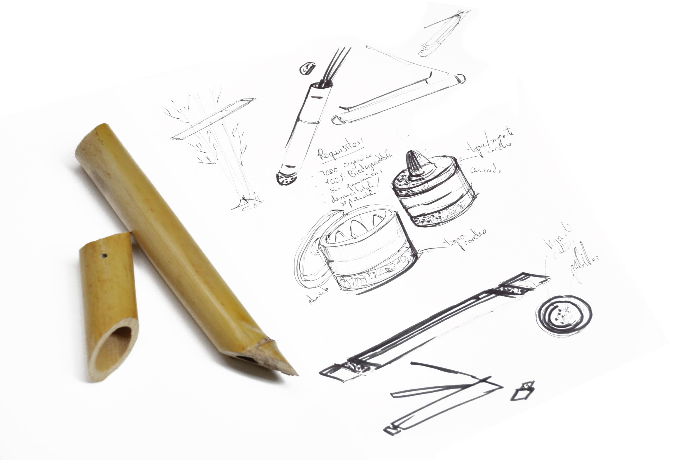
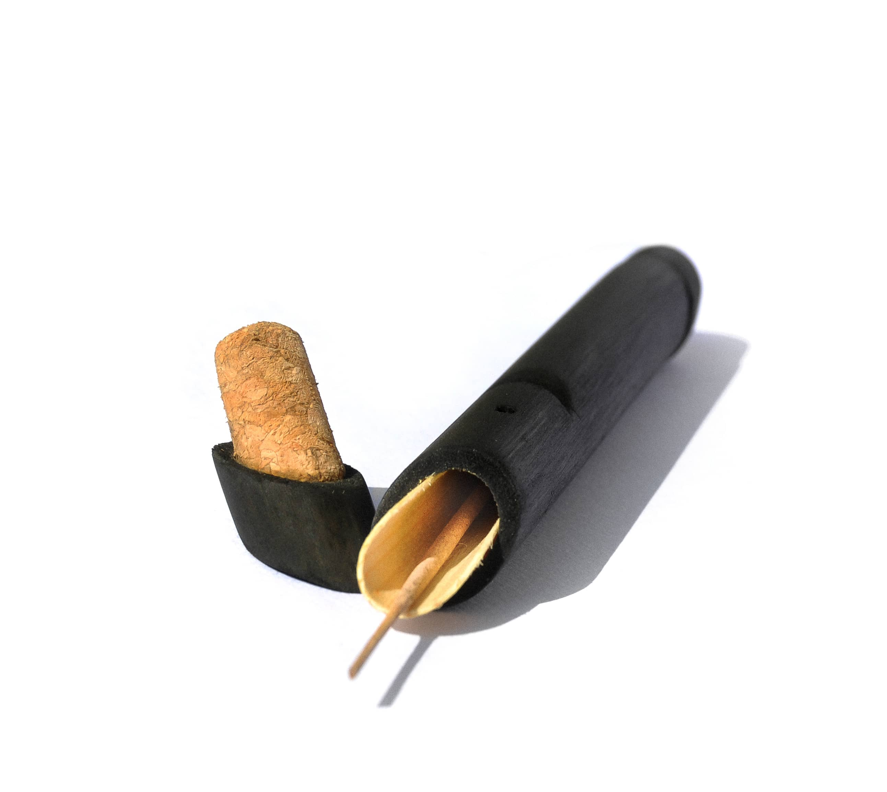
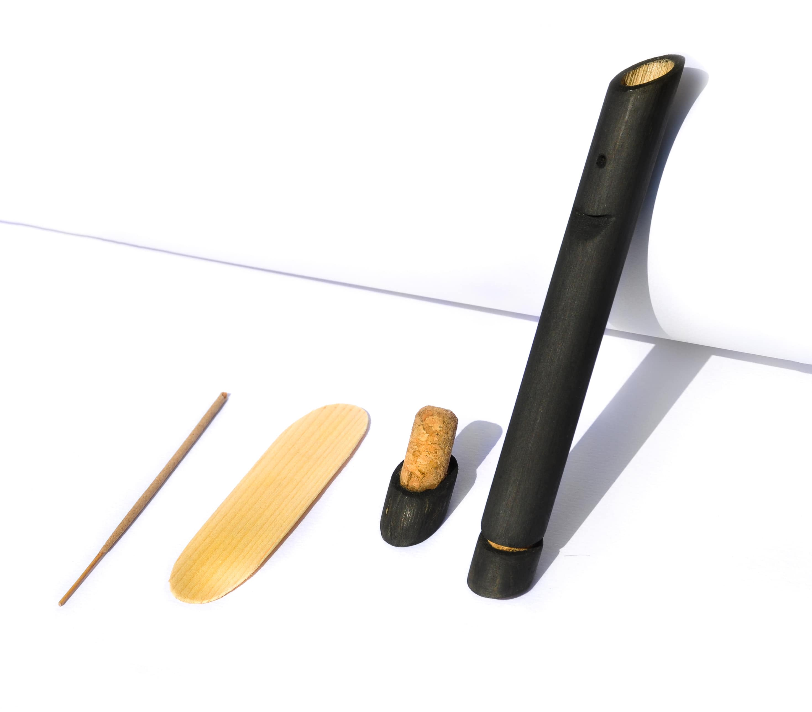

________________________________________________________________
Bufem - Incienso 0 waste
________________________________________________________________


●
Un packaging usable y orgánico
Bufem es un soporte y contenedor de incienso, hecho de caña "Arundo donax": una planta invasora y abundante. El concepto de este producto es el de pensar un producto para que no necesite de un envoltorio para su venta, y que además pueda usarse de manea autonoma y reusarse.
Al estar hecho enteramente de materiales orgánicos (caña teñida, corcho y madera) es un producto que viene de, y volverá a la tierra, cerrando el ciclo de vida del objeto bajo la filosofía del diseño Cradle to Cradle.
●
________________________________________________________________


●
El proceso de fabricación es de lo más sencillo y se puede fabricar fácilmente de manera artesanal
o con maquinaria: poco proceso, y poca necesidad de tecnología. A través de metodos de decorado como por ejemplo
el grabado láser, este envase puede ser fácilmente personalizable sin afectar a el aspecto natural del material.